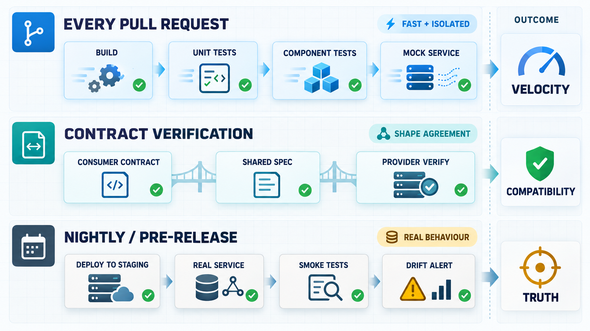

A mock is a promise about how a service behaves. The moment the real service changes and the mock doesn't, that promise is broken, and your pipeline has no way of knowing.
Why we mock in the first place
The case for mocking isn't really debatable: it's faster, it's reliable, and it decouples your test from everything you don't own. When I built a service module simulating one of our downstream dependencies, the point wasn't just speed, though spinning up the mock was faster than the real service in the pipeline. The real point was isolation. A test that only needs to know your service sends the right request and handles the right response shape doesn't need a real database, a real network hop, or someone else's staging environment to be up. Mock it, and a flaky third-party outage stops being your problem at 2am.
The cost is what the mock doesn't know. It's a snapshot of your assumptions at the time you wrote it, and it stays frozen while the real service keeps moving. A field that used to be optional becomes required. An error code that used to be a 400 becomes a 422. None of that shows up in your suite, because the suite is still asking the mock, not the service. The quietest version of this isn't even a shape change: the response stays a clean 200, the payload still matches the schema everyone agreed on, and the only thing that moved is the decision behind it. The mock keeps answering the way it always did. Nothing fails loudly. It just lets the wrong thing through.
Where a mock isn't the right call
A changed rule behind a 200 isn't a one-off either. There's a specific set of behaviours mocks tend to skip past entirely, and they're worth naming because they're exactly the kind that pass a mocked test cleanly and then break in production:
- Serialization. A mock hands back an in-memory object; the real service hands back bytes that have to be encoded, decoded, and schema-checked.
- Key/value validation. A test double stores whatever you give it. A real store might reject a malformed key or truncate one that's too long.
- Eviction and TTL behaviour. Mocks don't age data out. A value that should expire in five minutes just sits there for the whole test run.
- Listener and callback execution. A mock often returns success on publish without ever invoking anything downstream, so whether your subscriber logic actually runs goes untested.
A few more in the same bucket: connection pooling and timeouts, partial failure, and locking or concurrency. None of this is a reason to stop mocking. It's a reason to know exactly what you're not testing when you do.
Is contract testing enough?
Contract testing closes a real part of this gap. A consumer-driven contract says, concretely, "here's the shape of request I send and the response I expect," and a provider-side verification confirms the real service still honours it. When that's wired into both sides' pipelines, a provider can't silently change a response shape without a contract test failing somewhere, which is exactly the class of bug a plain mock can't catch.
It's not sufficient on its own, though. Contracts generally cover shape, not behaviour under load, ordering, or state; a contract doesn't know your endpoint is fine on the first call and wrong on the second. Take an eligibility check that a downstream service calls before letting an action through: the contract says a request with these fields gets back a 200 with { "approved": boolean, "reason": string }, and that's genuinely all it checks. The provider is free to change the rule behind approved — tighten a threshold, swap which upstream value it reads, reorder two conditions — without breaking the contract at all, because the contract was never testing the rule, only the wrapper around it. The consumer's test suite, mock included, keeps passing the whole time, and the first sign anything moved is a support ticket about requests that used to go through and now don't. They only protect what someone remembered to write a contract for, so a new field or an undocumented edge case ships uncovered. And they only work if both sides actually run them and treat a failure as a blocker, not noise to wave through, the same discipline problem that lets a stale mock survive in the first place.
What actually tightens things beyond the contract itself:
- A shared spec both sides treat as truth. An OpenAPI or AsyncAPI definition that's the actual source for both the mock and the real implementation, not two teams' separate mental models of the same endpoint.
- Business-rule scenarios in the contract, not just shape. A contract that only checks "a valid request gets a 200" won't catch a threshold change. One that pins down "£199 returns
approved: true, £201 returnsapproved: false" will, because the rule itself becomes something verification actually checks, not just the envelope around it. - Verification against the real provider build, not only the mock. Run the consumer's contract tests against the provider's actual build in CI, not just the mock standing in for it, so the wrapper and the rule inside it get checked by the same run.
- Cross-team visibility when something changes. The provider team flags a breaking change before it ships, not after a contract test fails downstream, which is a collaboration habit, not a tooling problem.
- Scheduled runs against the real thing. Even a small number of nightly or pre-release smoke tests against the actual service catches the drift that contracts weren't written for.
- Real-vs-mock response diffing. Compare what production or a sandbox actually returns against what the mock returns for the same inputs, on a schedule, so drift shows up even when nobody thought to write a new contract case for it.
- Ownership on the alert. Someone is actually notified and accountable when a provider's behaviour shifts, the same way Datadog anomaly detection means someone owns a latency spike rather than it quietly becoming normal.
None of this replaces exploratory testing either. The ambiguous, badly-described error responses I've found running Postman against real UAT environments weren't things a contract would have specified in the first place. Nobody wrote a contract for "this error message doesn't say what actually went wrong."

Where each one earns its place
Mocks belong in unit tests, component tests, and most of what runs on a PR, anywhere the question is "does my logic do the right thing," not "does the integration actually work." That's most of a pipeline, and it should stay fast.
Real services belong in staging, in a lean set of end-to-end smoke tests before a release, and in scheduled runs that aren't gating every commit but do run often enough to catch drift early. A rule-change defect like the eligibility example only gets confirmed once someone runs the actual call against the actual service and checks the decision, not just the status code. No amount of mock coverage would have surfaced it, because the mock — and the contract — were both still describing the wrapper, not the rule inside it.
The rule I actually use: mock for velocity, use the real thing for truth, and treat contract testing as the bridge between them, not a replacement for either.